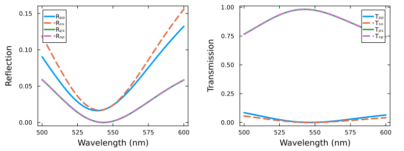

Unitful.jl integration
GeneralizedTransferMatrixMethod.jl automatically loads and reexports Unitful.jl. This way all input parameters can be specified using the units supported by Unitful.jl
using LinearAlgebra
using GeneralizedTransferMatrixMethod
# Import most common units
using Unitful: °, nm, μm, mm, mWe simulate a slab of a uniaxial crystal in air as an illustrative example
Air = Layer()
nₒ(λ) = 3
nₑ(λ) = 1.5
@permittivity "Mat" λ -> Diagonal([nₒ(λ), nₑ(λ), nₒ(λ)].^2)We can define all input parameters using Unitful.jl quantities
α = 30°
ζ = sin(α)
ϕ = 45°
d = 183nm
λ = (500:0.1:600)nmand pass them to setup the LayeredStructure
Stack = LayeredStructure(
superstrate = Air,
layers = [Mat(d = d, ϕ = ϕ)],
substrate = Air
)and use them to calculate its properties
Properties = [calculate_structure_properties(ζ, λᵢ, Stack) for λᵢ ∈ λ]
using Unzip
Rₚₚ, Rₛₛ, Rₚₛ, Rₛₚ = unzip(reflection.(Properties))
T(prop) = abs2.(transmission_coeffs(prop))
Tₚₚ, Tₛₛ, Tₚₛ, Tₛₚ = unzip(T.(Properties))Units get automatically added to the axis labels in Plots.jl
using Plots
p1 = plot(
λ, [Rₚₚ Rₛₛ Rₚₛ Rₛₚ],
label = ["Rₚₚ" "Rₛₛ" "Rₚₛ" "Rₛₚ"],
xlabel = "Wavelength",
ylabel = "Reflection",
ls = [:solid :dash],
)
p2 = plot(
λ, [Tₚₚ Tₛₛ Tₚₛ Tₛₚ],
label = ["Tₚₚ" "Tₛₛ" "Tₚₛ" "Tₛₚ"],
xlabel = "Wavelength",
ylabel = "Transmission",
ls = [:solid :dash],
)
plot(p1,p2)